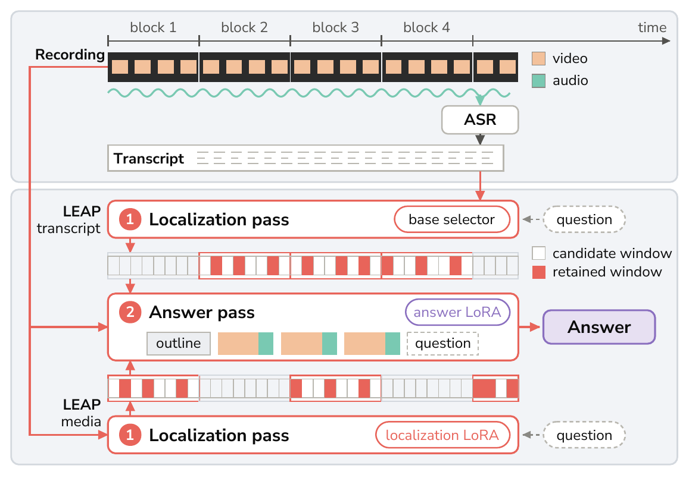
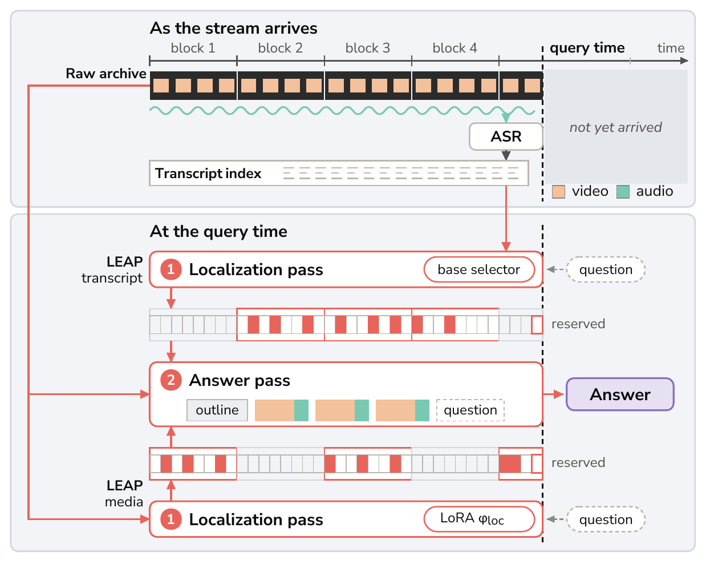

LEAP
Learned Block-wise Evidence Retrieval for Long Audio-Video Perception
1Northeastern University 2Futurewei Technologies
Code will be released upon acceptance.
Corresponding author: Juyi Lin (lin.juy@northeastern.edu). Work done during an internship at Futurewei Technologies.
Abstract
Hour-scale audio-visual question answering is constrained by a context dilemma: dense whole-recording encoding rapidly exhausts context limits, whereas uniform temporal compression severely dilutes fine-grained acoustic and visual evidence. We introduce LEAP, a framework where the model retrieves its own evidence without placing the whole recording in one context. LEAP divides a recording into fixed-duration blocks, applying a lightweight localization pass to each block to score short candidate windows. The highest-ranked windows are pooled and re-encoded in a single bounded answer pass. Consequently, the answer input and peak context remain independent of the recording duration. By decoupling evidence localization from reasoning, our framework can localize candidate temporal windows over pre-computed transcripts without decoding media frames, while preserving fine-grained visual and non-speech evidence by routing the final answering pass over raw audio-visual streams. LEAP trains both stages: a localization LoRA improves the selected windows, and an answer LoRA improves the answers read from the same windows. The block grid natively supports causal queries, enabling LEAP to support streaming inference without streaming-specific training. Across several AVQA benchmarks, LEAP improves over the Qwen3-Omni-30B-A3B baseline by 4.5–16.8%, and transfers to a second omni-modal backbone, MiniCPM-o 4.5, surpassing its published results by 3.1–13.0%.
Method

- Evidence retrieval without a whole-recording read. LEAP narrows a full-length recording to a bounded set of evidence-rich windows, at per-pass context and working memory that are constant in the recording's duration.
- The transcript as a second scanning channel. Decoupling evidence localization from reasoning lets the same block grid be searched on pre-computed transcripts without decoding media frames; only the windows it selects are re-read as audio and video. The two channels share the block grid and the answer pass and differ only in what is scanned. Routing the answer pass over the raw audio-visual stream preserves the fine-grained visual and non-speech evidence a transcript misses.
- Historical retrieval as the stream arrives. The block grid natively supports causal queries, so LEAP supports streaming inference without streaming-specific training. The localization pass selects windows over the media blocks, or over an online transcript index, up to query time, and the answer pass re-reads them from raw media.
Results

Main results on Qwen3-Omni-30B. Accuracy (%).
| System | TraceAV | LVOmni | VideoOdyssey (1–4h) | MMOU |
|---|---|---|---|---|
| gemini-3-flash-preview⚬ | 62.3 | 59.0 | 44.3 | — |
| Qwen3.5-Omni-Plus⚬ | — | — | 43.0 | — |
| Ming-Flash-Omni-2.0 | 51.7 | 34.6 | — | — |
| Caption cascade into Qwen3-235B | — | — | — | 47.9 |
| Qwen3-Omni-30B, as published* | 48.4 | 35.8 | 28.7 | 54.1 |
| Qwen3-Omni-30B, with ASR transcript* | — | 42.2 | — | — |
| Qwen3-Omni-30B, official recipe | 56.4‡ | 40.7‡ | 36.9‡ | 56.5‡ |
| Whole clip, uniform, frame-matched | 53.6 | 40.4 | — | 57.8 |
| LEAP without retrieval | 54.8 | 42.9 | 41.9 | 61.8 |
| LEAP without answer training | 60.1 | 43.0 | 46.7 | 61.4 |
| LEAP | 60.9 | 45.8 | 53.7 | 66.3 |
Upper block: closed-source systems (⚬) as published. Middle block: open systems as published, then our backbone; * = the published number for our backbone; caption cascade = audio and visual captions read by a text-only model; ‡ = the benchmark's official input recipe re-run on our stack, or an official-style whole-clip run where none is runnable. Lower block: LEAP without retrieval = LEAP's answer LoRA reading the whole clip in one pass (on VideoOdyssey, its audio-montage recipe); LEAP without answer training = LEAP's localization LoRA also answering the selected windows; — = no number. TraceAV = the mean over its twelve general sub-tasks. Bold = best, underline = second best in each column.
The smaller backbone against its published rows and two systems of its size class. Accuracy (%).
| System | TraceAV | TraceAV | LVOmni | MMOU |
|---|---|---|---|---|
| General | Hallucination | test-15K | ||
| video-SALMONN-R3 (8B)a | — | — | 42.9 | — |
| OmniAgent-RL-7Bb | 47.6 | 42.0 | 39.4 | 31.6 |
| OmniAgent-RL-7B, as published* | 55.0 | 46.1 | — | — |
| MiniCPM-o 4.5, as published* | 44.8 | 66.5 | 34.8 | 46.8 |
| + LEAP | 57.8 | 69.6 | 44.4 | 51.0 |
* = published number. a = a re-watching system on Qwen3-VL-8B with a Whisper encoder, as its paper reports it. b = a native omni agent on Qwen2.5-Omni-7B, run by us under its own evaluator and step limit. — = no number. Columns follow each publication's protocol: TraceAV's two tables as subtask macro-averages, LVOmni micro, MMOU's test-15K split under the benchmark's own evaluator. Bold = best, underline = second best in each column.
Streaming

Historical retrospection under causal access on StreamArena, Qwen3-Omni-30B. Accuracy (%).
| System | HR avg | evidence distance (min) | |||
|---|---|---|---|---|---|
| ≤5 | 5–15 | 15–30 | >30 | ||
| Whole prefix | 25.4 | 22.1 | 34.2 | 25.5 | 12.6 |
| Uniform windows | 20.2 | 23.2 | 25.8 | 17.9 | 9.3 |
| LEAP – media | 32.0 | 26.5 | 41.2 | 29.3 | 23.6 |
| LEAP – transcript | 30.1 | 24.3 | 36.1 | 30.4 | 24.7 |
Bins = minutes from the query time back to the evidence. Whole prefix reads everything before the query time in one pass; Uniform windows fills the same context with windows spread equally over it; LEAP – media and LEAP – transcript select the windows from the media blocks or from the transcript index built as the stream arrives, and answer them from the raw media. Bold = best, underline = second best in each column.
Citation
@article{lin2026leap,
title = {{LEAP}: Learned Block-wise Evidence Retrieval for Long Audio-Video Perception},
author = {Lin, Juyi and Lao, Zhiqiang and Cui, Jiali and Zhao, Lin and Zhao, Pu and Zhang, Dichang
and Akbari, Arman and Qi, Yu and Jiang, Xinru and Wang, Yanzhi and Yu, Heather and Peng, Liang},
journal = {arXiv preprint arXiv:2609.39938},
year = {2026}
}